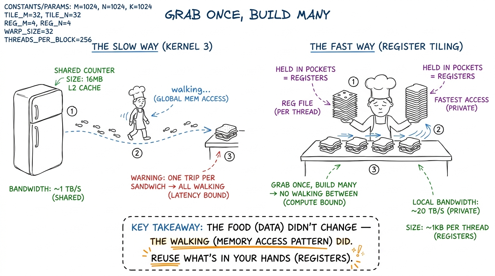
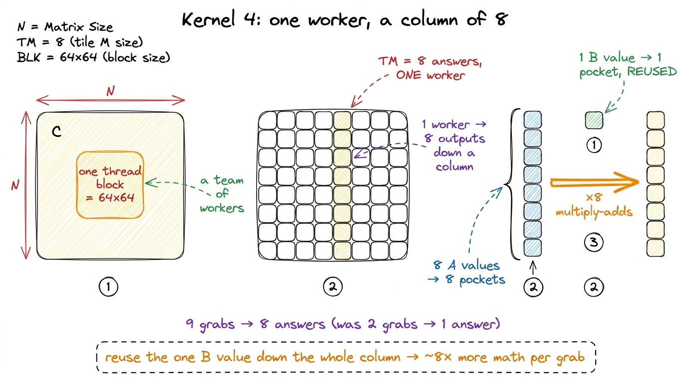
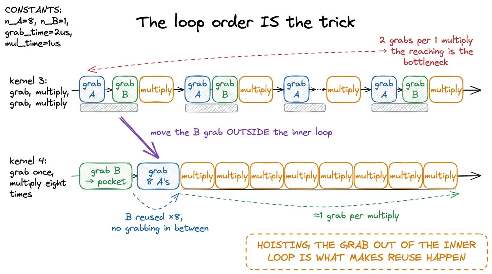
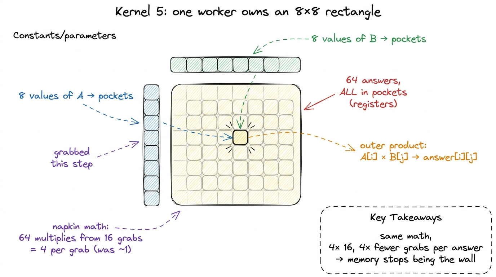
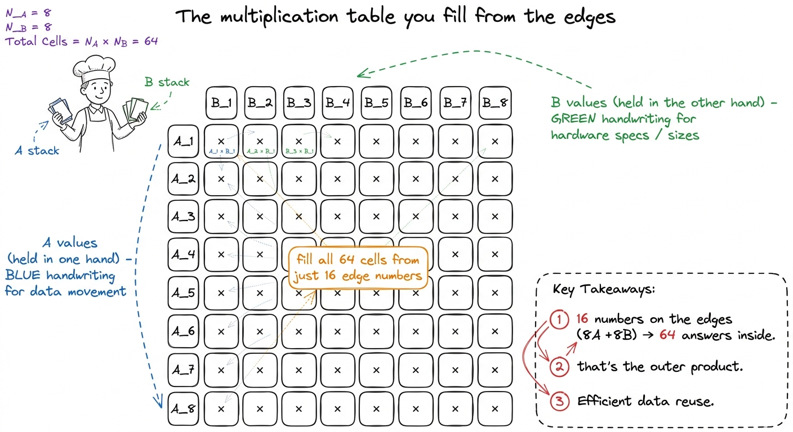
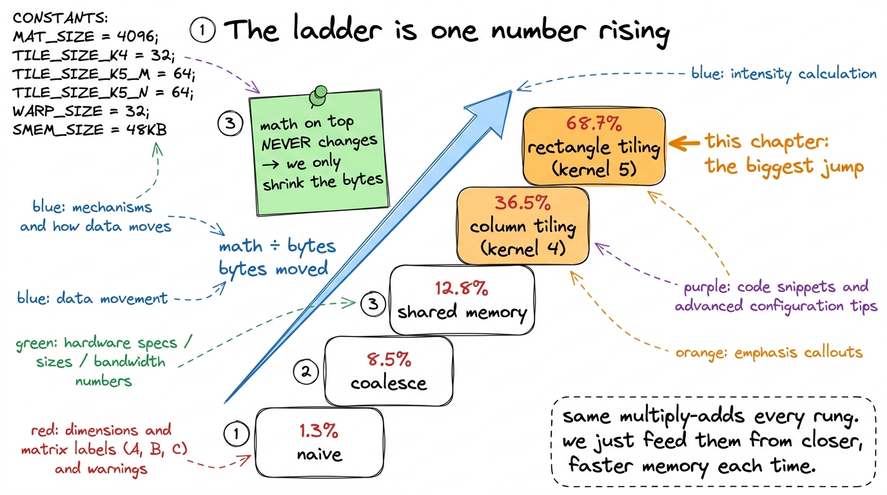

Teaching Kernels 4–5: pockets full of work
By the end of this chapter you'll be able to stand at a whiteboard and teach the single biggest speedup in the whole GEMM ladder — the one move that takes a kernel from 12.8% of the expert library all the way to 68.7% — without any student getting lost. And the beautiful part is that the idea is small. So small you can say it in one sentence: make each worker compute many answers from a handful of numbers it's already holding. That's it. That's the whole chapter. Let's build it up so gently that it feels obvious.
Where we are on the journey
Remind your students where they've climbed to, because this chapter only makes sense as the next step. So far the story has been about moving data closer. First we made each trip to the far-away pantry count (coalescing). Then we carried a whole box of ingredients onto the kitchen counter so everyone nearby could share it (shared memory). Each move got the data a little closer to the workers.
But we hit a new wall. Even with the box on the counter, each worker was still reaching over to grab an ingredient for every single multiply. Grab, multiply. Grab, multiply. The reaching itself became the bottleneck. This chapter is about a different kind of move — not "get the data closer," but "once you've grabbed it, use it more."
The core idea: a pocket full of work
Give every student this picture. A worker has pockets — a tiny number of them, right on their person, instant to reach into. These pockets are called registers: the fastest storage on the whole chip, private to each worker, right next to the hands that do the math. Reaching into a pocket is free. Reaching over to the shared counter is not.
Up until now, each worker computed one answer. They'd grab a number from the counter, multiply, grab the next, multiply. One answer per worker, and a reach for every multiply. Wasteful.
The new plan: each worker grabs a small handful of numbers, stuffs them in their pockets, and then computes many answers out of that same handful — without reaching for the counter again in between.

figure rendering · The whole chapter in one picture: stop walking to the fridge per sandwSay the punchline plainly: we are not doing less math. A matrix multiply always needs exactly the same number of multiply-adds — that never changes. What changes is how many times we have to reach for memory to feed those multiplies. Fewer reaches, same math, faster kernel.
Kernel 4: one worker, a column of eight answers (1D tiling)
Start here, because it's the simpler version and it makes the 2D version trivial afterward.
In kernel 4, we stop giving each worker one answer. We give each worker a little column of 8 answers stacked vertically in the output grid. Why a column, and why does that help? Here's the magic, and it's worth doing by hand.
All 8 of those answers sit in the same column of the result. That means — trace it on the board — all 8 of them need the same value from matrix B, but 8 different values from matrix A.
Compare that to before. In kernel 3, one answer per step cost two grabs (one from A, one from B) to feed one multiply. That's a 2-to-1 ratio of reaching-to-math. Now it's roughly 9-to-8 — almost one grab per multiply. And if you're clever about the loop, that single B value gets reused across the whole column, so it barely counts at all. The useful work squeezed out of each grab went up about eightfold.

figure rendering · Kernel 4: each worker owns a column of 8 outputs, holds 8 A values pluThe one line of code that makes it legal
Show the loop, but explain it as an ordering trick, not as code. The secret is: put the dot-product step on the outside and the 8 answers on the inside. That way you grab the shared B value once at the top, then sweep it across all 8 answers before grabbing anything new.
float threadResults[TM] = {0.0f}; // TM=8 answers, all in pockets
for (uint k = 0; k < BK; ++k) { // the dot-product step, OUTSIDE
float tmpB = Bs[k * BN + threadCol]; // grab ONE B value into a pocket
for (uint i = 0; i < TM; ++i) { // the 8 answers, INSIDE
threadResults[i] += As[(threadRow*TM + i)*BK + k] * tmpB;
}
}tmpB line is OUTSIDE the inner loop — so we grab that B value once, then reuse it eight times without grabbing again." Circle tmpB in orange. Then say: "if you moved that line inside the inner loop, you'd grab it eight times, and the whole trick evaporates. The magic isn't the pockets — it's putting the grab in the right place so the pockets get reused."
figure rendering · Making the dot-product step the outer loop lets one B grab feed a tighKernel 5: one worker, a whole rectangle (2D tiling)
Now the students are ready for the big one, and it's just kernel 4's idea applied twice at once.
Ask the question out loud: "If reusing one B value down a column of 8 was good, why not reuse in both directions — reuse B values across a row AND A values down a column, at the same time?" That's the whole leap. Instead of a column of 8 answers, each worker now owns a small 8×8 rectangle of the output — 64 answers, all held in pockets.
Here's the by-hand magic, and it's gorgeous. To advance all 64 answers on one step, the worker grabs 8 values of A (one per row of the rectangle) and 8 values of B (one per column of the rectangle) — 16 grabs total. Then it does the outer product: every one of the 8 A values times every one of the 8 B values. That's 8 × 8 = 64 multiply-adds from just 16 grabs.
Now count the reaches-to-math ratio and watch it improve. Kernel 4 was 9 grabs for 8 multiplies — about 1 flop per grab. Kernel 5 is 16 grabs for 64 multiplies — 4 flops per grab. Four times the useful work squeezed out of every reach into shared memory. Same math (a matmul is always a matmul); four times fewer reaches per answer.

figure rendering · The per-worker register rectangle: sixteen grabs feed sixty-four multi
figure rendering · The outer product taught as filling a times-table: 8 edge numbers on eThe code, same shape as before
Show it, and point out it's kernel 4 with a second inner loop:
float threadResults[TM * TN] = {0.0f}; // 8×8 = 64 answers, in pockets
float regM[TM] = {0.0f}; // 8 A values
float regN[TN] = {0.0f}; // 8 B values
for (uint dotIdx = 0; dotIdx < BK; ++dotIdx) {
for (uint i = 0; i < TM; ++i) // grab the 8 A's ONCE
regM[i] = As[(threadRow*TM + i)*BK + dotIdx];
for (uint j = 0; j < TN; ++j) // grab the 8 B's ONCE
regN[j] = Bs[dotIdx*BN + threadCol*TN + j];
for (uint i = 0; i < TM; ++i) // the outer product: 64 FMAs
for (uint j = 0; j < TN; ++j)
threadResults[i*TN + j] += regM[i] * regN[j];
}i,j loop, we'd do 64 grabs. By pulling them out into the two little arrays first, we collapse 64 grabs down to 16." That hoisting is the entire performance win, and it's the same lesson as before: the pockets only pay off if the grab sits in the right place.Why does this let you fit everything? A word on the pockets
A student will worry: "How can 64 answers plus 16 grabbed values all live in pockets at once?" Good question, and here's the honest answer. Each worker on an H100 gets up to 255 pockets (registers). Our 8×8 tile needs 64 + 8 + 8 = 80 of them, plus a few for bookkeeping. Comfortable.
The one number that ties it all together: arithmetic intensity
This is the concept to leave ringing in their ears, because it explains why every rung of this whole workshop works. There's a single number called arithmetic intensity — the amount of math you do per byte of memory you move. Math on top, bytes on the bottom. A fraction.
The math on top never changes for a matmul — it's always the same pile of multiply-adds. So the only way to raise the fraction is to shrink the bottom: move fewer bytes. And that is exactly what register tiling does. Every rung of the ladder is the same fraction with a smaller and smaller denominator.

figure rendering · Read the ladder as one fraction climbing: the math on top is fixed forThe board plan, in order
Give the mentor a concrete sequence so this delivers cleanly:
- Recap the wall. "We got the box onto the counter — but we still reach for every multiply. The reaching is now the bottleneck." 2 minutes.
- The sandwich metaphor. Grab a stack, build many. Draw the two cooks. Land "same food, less walking." 3 minutes.
- Kernel 4 by hand. One column of 8. Show all 8 share the same B value. Count 9 grabs → 8 multiplies. Reveal the jaw-drop: 12.8% → 36.5%. 6 minutes.
- The loop-order trick. Draw the two nested boxes, circle
tmpB, show why it must be outside. 3 minutes. - Kernel 5, the leap. "Why not reuse in both directions?" Draw the 8×8 rectangle. Fill the times-table from the edges. Count 16 grabs → 64 multiplies. Reveal 68.7% — past halfway. 6 minutes.
- The pocket limit. Answer "why not 16×16?" with the 255-register ceiling. 2 minutes.
- Tie it off with intensity. One fraction, math fixed, bytes shrinking — and that's what runs in vLLM and FlashAttention today. 3 minutes.
Checkpoint questions to fire at the room: "In kernel 4, why does one worker owning a column let us reuse a B value?" (Because a column shares the same B column.) "In kernel 5, how many multiplies do we get from 16 grabbed values?" (64 — the outer product.) "Did we change the amount of math between kernel 4 and 5?" (No — only the bytes moved.)
You can now teach
- Register tiling as the sandwich-shop trick: grab a stack of ingredients into your pockets once, then build many answers from your hands instead of walking to the fridge per answer.
- Kernel 4 (1D tiling): one worker owns a column of 8 outputs, reuses one B value across all of them, and jumps the kernel from 12.8% to 36.5% — demonstrated by hand as 9 grabs → 8 multiplies.
- The loop-order secret: why the shared-memory grab must be hoisted outside the inner loop for reuse to happen at all.
- Kernel 5 (2D tiling): one worker owns an 8×8 rectangle and fills it with an outer product — 16 grabs → 64 multiplies — carrying the kernel to 68.7%, past the halfway mark and the biggest jump on the ladder.
- The register-file limit: why bigger tiles aren't free (the 255-pocket ceiling and spilling), and why tile sizes eventually get tuned.
- Arithmetic intensity as the unifying number: math-per-byte, with the math fixed and the bytes shrinking every rung — the exact climb that makes vLLM, FlashAttention, and DeepSeek efficient in production today.